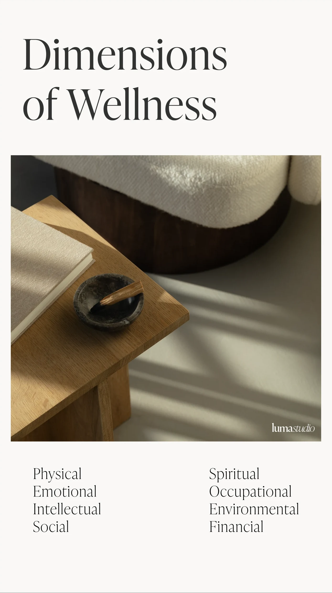
Luma Studio · Wellness · 2026
Luma Studio
Luma means light. The studio was opening with a name and nothing else, so the first decision was which light it would be.
The answer was the blue hour. Not noon. The half hour before the day turns on, or the one after it shuts off. Light that tells you the rush is over, or that you have a moment to yourself before it starts. It is the same hour a class is supposed to produce inside the person taking it.
Everything after that descends from the hour. The palette is a room at dawn, cool and low. The type is Ivy Presto, a high contrast serif in a category that defaults to geometric sans. And a four pointed star stands in for the light wherever the name does not fit.
The space around all of it is the material, not the leftover. Most wellness brands fill the frame; Luma leaves it open, and the emptiness has to read as deliberate rather than unfinished. That was the real test. A studio can feel calm in the room and read as having nothing to say on a phone, and for a studio that has not opened yet, that gap is the whole risk.
The wordmarkTwo cuts of Ivy Presto set without a gap between them. The roman says the name, the italic says what it is, and the star closes the line where a period would otherwise sit. Ivy Presto was chosen against the reflex of the sector: its proportions are drawn for screen and print at once, so the name holds on a window decal and in a profile picture without a second version.
The markThe name means light, so the mark is light. A four pointed star drawn on a single line weight, held inside a circle that keeps it from drifting when it sits alone. Four colorways, because the studio prints on blue, on black, on sand and on white, and a mark that only works on one of them is half a mark.
The paletteThe blue is the hour itself, taken low and cool rather than bright. It carries the pieces someone has to find quickly: the schedule, the tiers, the offer. Sand carries everything meant to be read slowly. There is no accent color, because a fifth voice would undo the first four.
The drawn systemFourteen marks on one line weight: six built from the star, eight from a body in motion. They exist so the brand can appear on a schedule, a corner, a stamp, without dragging the full name into places it does not fit. None of them is decoration. Each one is the smallest the brand can get and still be itself.
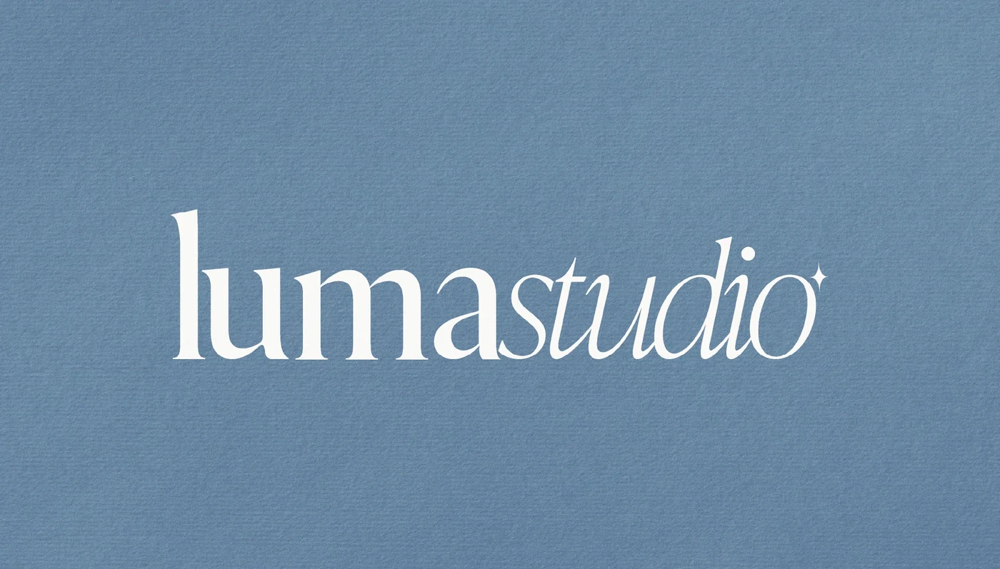
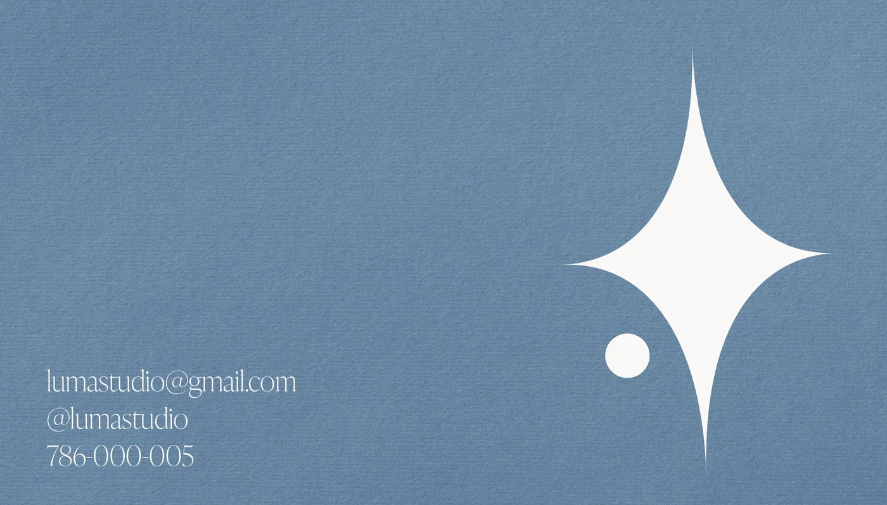
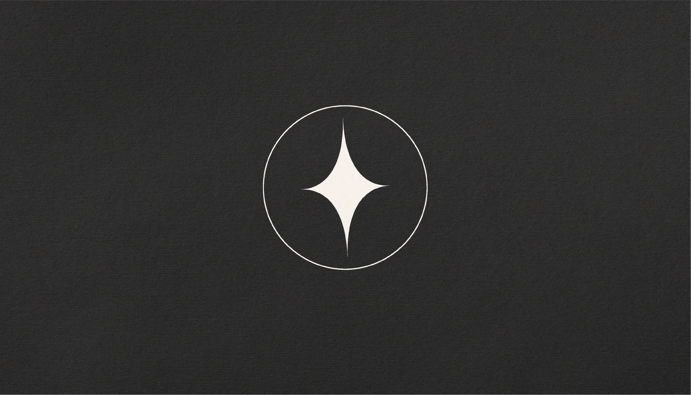
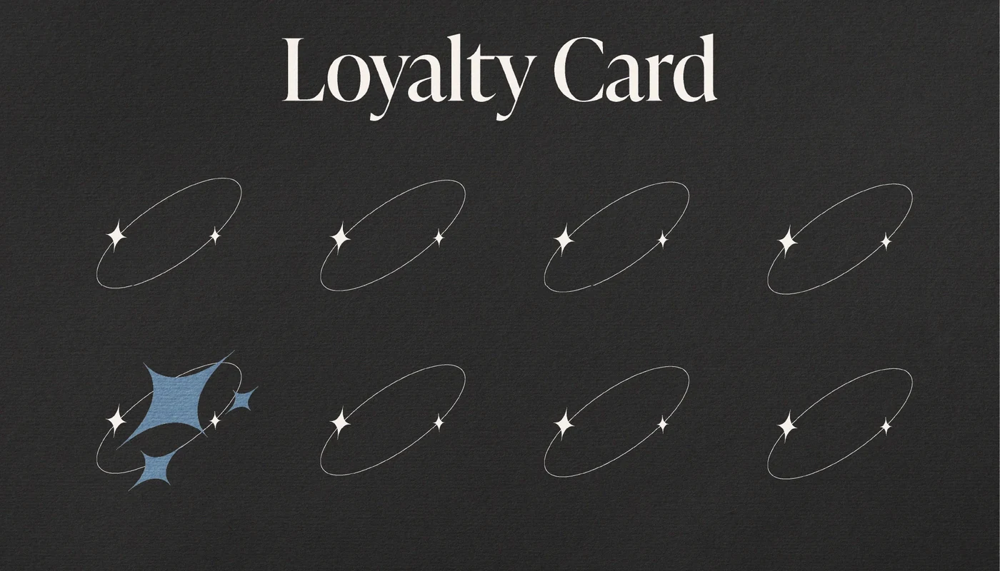
In the handThe card holds the name on one face and the contact on the other, with the star cropped off the edge so the object reads as a brand before it reads as a phone number. The loyalty card turns the mark into the mechanic: eight orbits, one filled, and the reward is drawn rather than written.

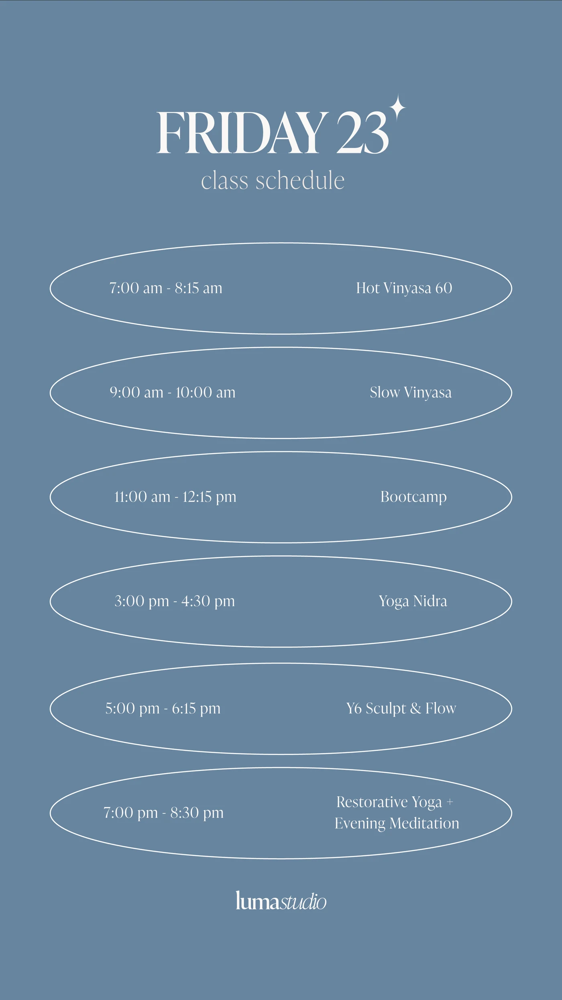
The daily surfaceStories are where a studio actually talks to the people who already came, so they got a system rather than a look: one for teaching, one for selling, one for the schedule. Each is editable in minutes, which is the only reason a template survives a full week of classes.
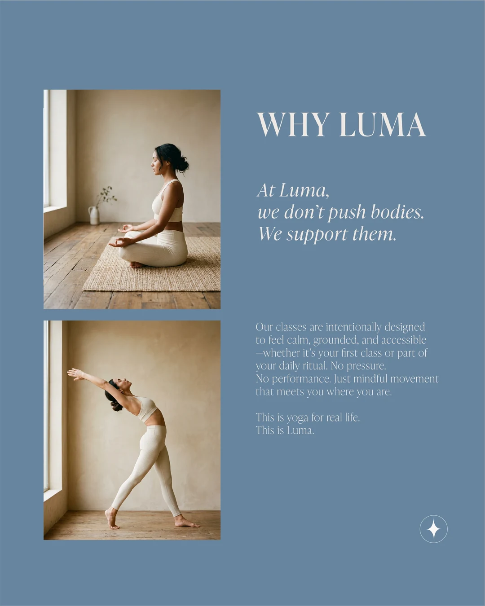
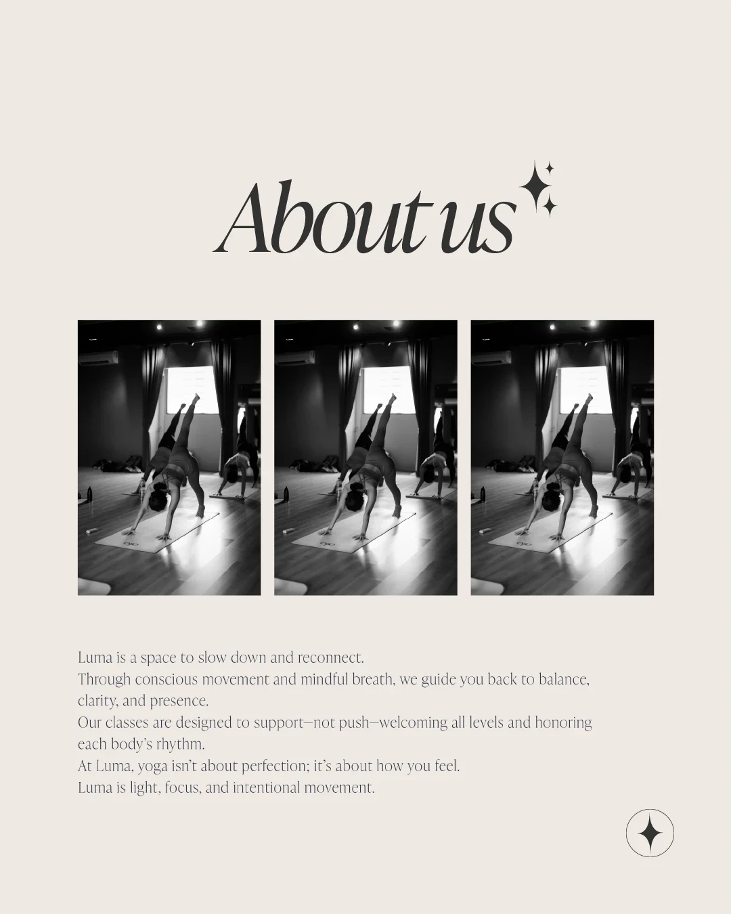
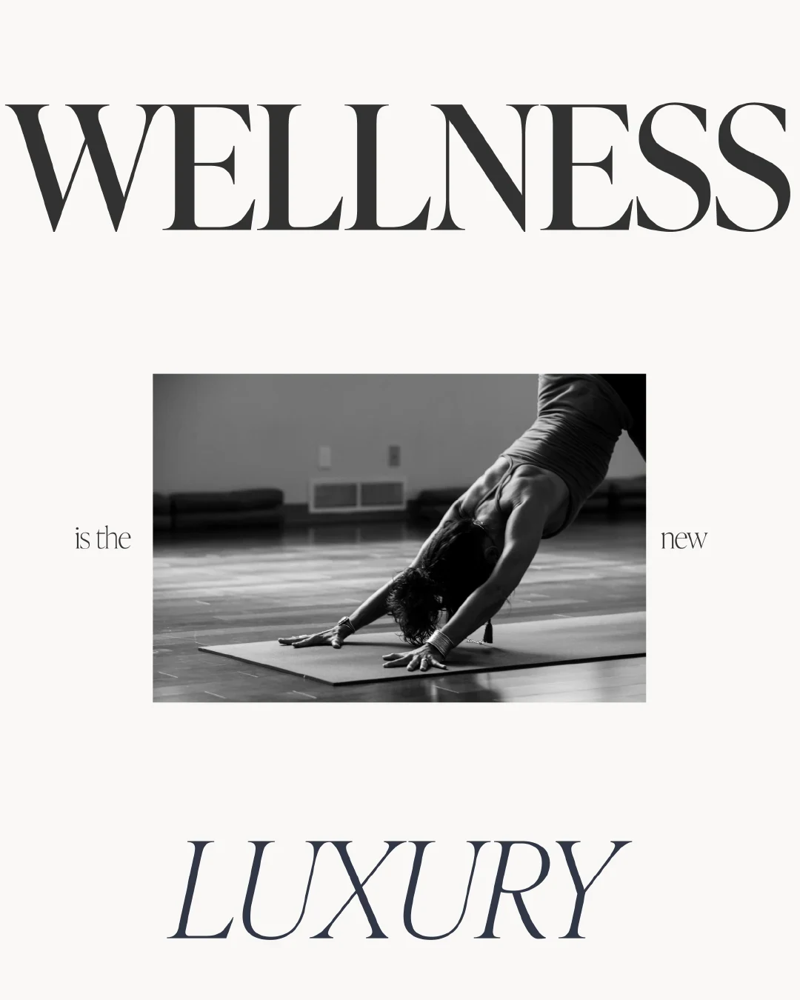
The argumentThe feed says what the studio believes before anyone books. Photography drops to black and white when the subject is the practice itself, because removing the color removes the thing the eye reaches for first and leaves the light and the shape of the body. It stays in color when the subject is the room, which is the part a member is buying.
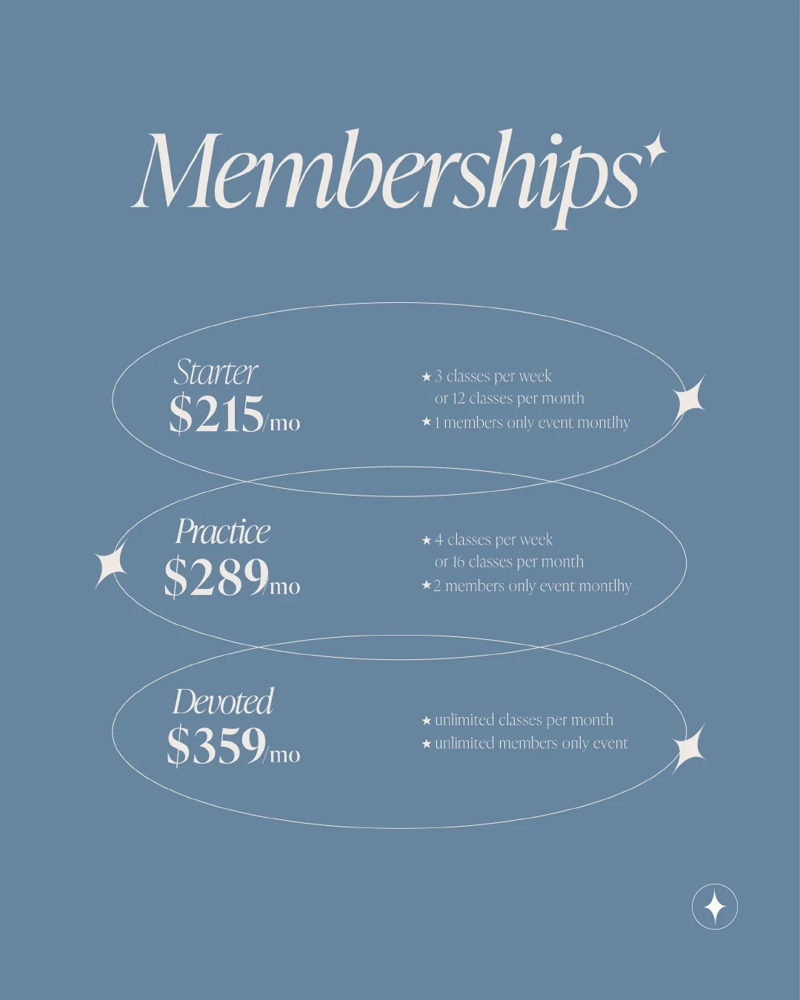
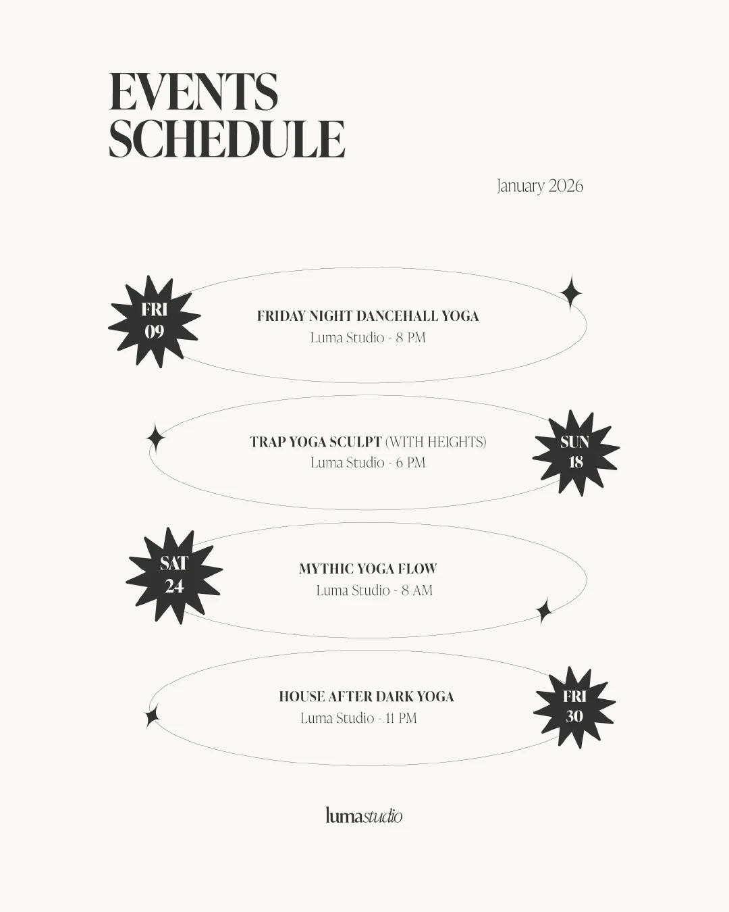
Where it sellsThe star has points. Nothing that holds information does. Prices, dates and loyalty stamps all sit inside open ellipses, never boxes. A number in a box reads as a demand; the same number inside a curve reads as an option, and for a studio selling three hundred dollars a month before it has a single member, that difference is the sale.
One call. A clear list of what is working in your brand and what is not.